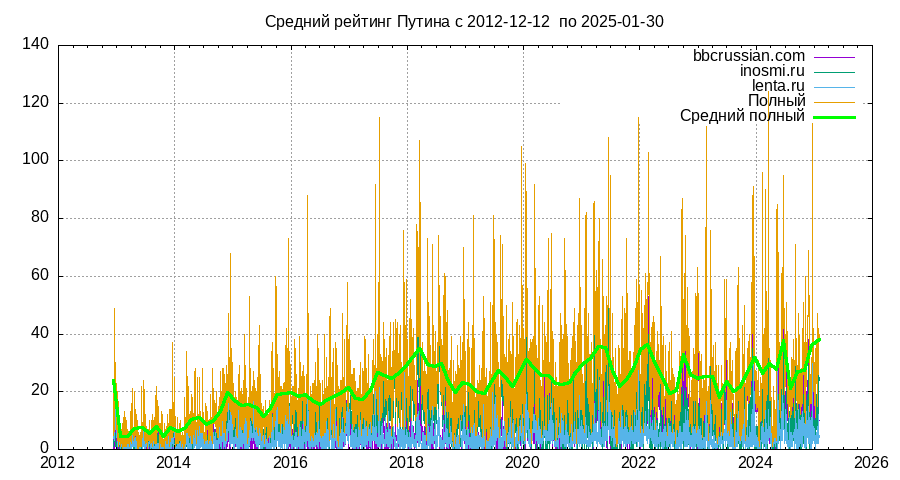
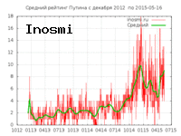
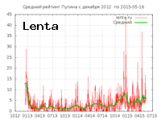
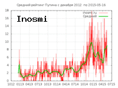
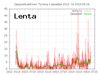
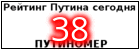
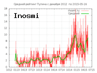
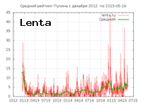
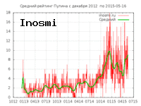
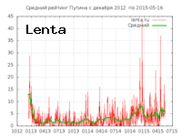

Путиномер Шимановского
[English]
Вашему вниманию предлагается так называемый "путиномер". Это автоматическая
система, ежедневно определяющая рейтинг Владимира Путина по версии сайтов
bbcrussian.com, inosmi.ru, lenta.ru. Как определяется рейтинг?
Очень просто. Подсчитывается, сколько раз слово "Путин" присутствует на
главной странице. Не имеет значения, в положительном смысле говорят о Путине
или в отрицательном. Известно, что черный пиар - тоже пиар.
Кроме того, определяется
суммарный рейтинг на основе этих трех. Статистика собирается с 12 декабря
2012 года и записывается в эту таблицу:
Полная рейтинговая таблица

А на картинке ниже приводится графическое отображение рейтинга за последние
две недели. Число в центре - средний рейтинг, удерживаемый
Владимиром Путиным в течение двух недель. Рейтинг 10 и более следует
считать высоким.

Код для вcтавки путиномера в блог или сайт

Рейтинги по сайтам
  
 
Путиномер ведет свой собственный блог http://putinomer.blogspot.com/
Малый путиномер. Только сегодняшний рейтинг

Код для вставки
С 31-го декабря 2019 открылось страничка Путиномера в сети onion.
http://ma3hqhoccgsy5cwdtfpdorwgryarlgq63da2fy4xpgrouqmw2f77wkid.onion/r_putin.html
ибо даже в темном интернете должно быть светлое место.
Сходный сервис Индекс русофобии.
(c) *** JES 2014 *** Юрий
Шимановский
 а также композитор, естествоиспытатель и
некродизайнер
Назад|На главную
а также композитор, естествоиспытатель и
некродизайнер
Назад|На главную
  
 